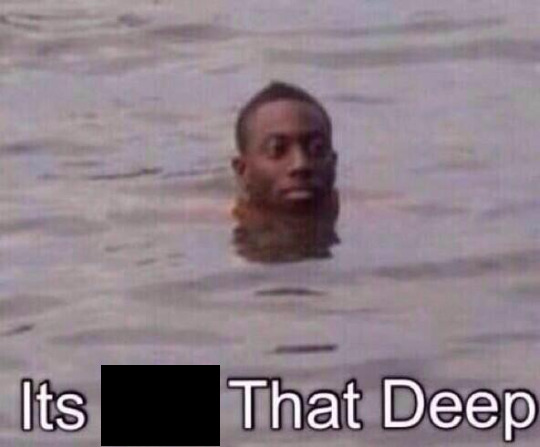

Frequently, and especially when it's the most problematic, it's difficult to do things. Not because the task I'm trying to do is particularly difficult or complex, but because it is difficult to summon the agency to execute my desire to have the task completed.
I have to assume that this is one the least least uncommon of my patterns of experience. Conversely, I'm speaking from the perspective of myself, and with opinions deriving from my personal experiences as a white-collar white-american (and not deriving from any sort of institutional qualification). I'm not you, so I'll write about me, and my thoughts on this.
Why is this so hard? I have chosen, or passively accepted, to commit to things like
doing homework, studying, cooking and cleaning, working, eating, sleeping, waking up.
I can logically reason about these things, how they would be enjoyable to do, how
they would have positive consequences to do them and/or negative consequences to
avoid them. I can remind myself about agreeable anecdotes and sound-bites of wisdom,
like how procrastinating and stressing over something puts you through it twice,
once begun is halfway done
, etc. Maybe I can recall the argument or general
feeling of the last inspirational self-help youtube video or medium video I looked at
which briefly inspired me.
This isn't helpful. It's also not true.
Theory 2: My Brain is FriedGotta admit, this is a pretty good one. Maybe it's because I'm under-slept (vicious cycle there). Maybe it's because I haven't done very much fun stuff in a while. My brain feels fried a good chunk of the time, but it's hard to discern a good theory of exactly why.
One thing that I have seen in myself, however, is a pattern in how I try to cope with this. I sit down, I unlock my phone. I turn off my brain and I tap on twitter. I scroll down with completely lack of intent. After a minute or two, I realize I'm not getting anything from this, I'll close the app with a brief flash of half-baked lucid intent to do something else, and I'll open facebook instead. Or some other app, even stackoverflow.
After some vaguely perceived duration of doing this, I'll get a building feeling like I need a meal but I'm just eating tootsie rolls, and this feeling will build up until I gather the turn off my phone and sit there with a fuzzy sensation that I suck.
Theory 3: Stop Filling Up on Mental Tootsie RollsI think that the tootsie-roll analogy is actually decently deep.  You're hungry, you need a meal, but instead you eat candy. It's fine to eat candy. But they're empty calories, they don't have nutrition, they won't sustain you. If you eat them instead of a meal, you might be physically full, but you won't feel any better.
You've been going through tasks through the day, thinking and problem-solving and working, and your mind needs a second of rest to collect its bearings. I tend to sit down and instinctively open my phone and try to get some hits of stimulation from apps and sites which have capitalistically evolved to capture our attention with maximum fitness. This feels like the empty calories of resting my mind. At the end, I feel worse, and I don't feel rested.
Last night I biked back to my apartment from campus feeling drained. Before I entered the house, I sat in the lawn for 20 minutes or so on the ground. No phone, no music, not reading or doing. The weather was perfect; the sun was setting and there was a cold breeze. I sat there drinking water and thinking. It felt like the mental equivalent of sitting in a sauna and sweating out toxins (I'm not going to google whether that's a real thing, it's not important right now). I think that's the whole-wheat sandwich of mental rest. Don't hit yourself with stimulation, cut it off. Think about minecraft, or what you're going to do tonight, or how you've changed since your earliest memory, or what's wrong with your life and how you could fix it, or electron microscopy, or just sit there and clear you mind like you're letting a stream of cool water wash over your consciousness and clean it up a bit like a dusty rock bed.
10/10, would recommend.
Theory 4: Stop Thinking
Perfectionism prevents you from finishing your goals, if not from starting them.
I've heard people claim that we avoid tasks because we fear failure, or we
fear that if we were to attempt the task we would be forced to confront that we
are inadequate at the task. Once begun is halfway done
is another way
of saying we're so resistant to starting things tasks that it doubles their
difficulty.
If you take this to the extreme you can get into a don't shave the yak type situation. If you're aware of this trap and aware of yourself, I think you can reason yourself out of yak-shaving. As I write this, I'm cringing at the careless informality, run-on sentences, and passive voice that I'm putting on the page. I know, however, that if I tried to maximally optimize this monologue, it would never come to exist. Rather, I think this becomes more of a problem in my life when it scales down.
Here's a rough model that I think might be useful. Think about all the actions you take in your life. There's large actions, like what career you go into, if and where you go to college, and whether you migrate to a different country. These actions should probably be premeditated and planned out. There's other actions, or sub-actions, which are lesser in magnitude but still important, like what projects you start, and what classes you take. These seem like good things to plan out, but it's honestly not really that critical. There's also very small tasks, like what you make for dinner, or whether you meet up with your friends, or which chores you do tonight. When you reach this point, if you're attempting to plan and optimize all of these tiny decisions, you'll be paralyzed by the amount of moving parts you are trying to connect, and the rate of tasks you're constantly trying to optimize, and your life will become less efficient and more painful, and you'll get less done.
It's good to premeditate big decisions. But as the decisions scale down to minutiae, your premeditation also needs to scale down. I think that, when I realize I'm doing this, I need to stop thinking and just do it .
ConclusionI haven't written something quite like this before, and I'm not sure how to conclude it. I'm writing this from a vulnerable place. This is a far more train-of-thought informal style than I've written in the past, and I'm really not sure who I expect to read this. Probably I'm largely making this from a selfish desire to articulate my thoughts and feel like I'm not wallowing in solitude.
I'm not a self-help guru, and I won't claim to have a solution to these problems. When someone's having a problem, my first instinct has for a long time been to think of some solution, or mitigation, or consolidation, or silver lining, or optimistic perspective. The trains of thought I'm compiling here are undoubtedly a reification of this instinct, but I've learned in recent years that sometimes there isn't a neat response to a problem.
Take care,
Phoenix